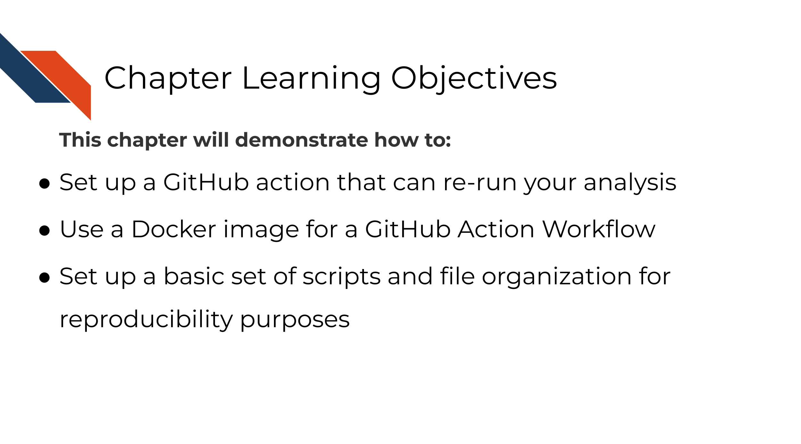
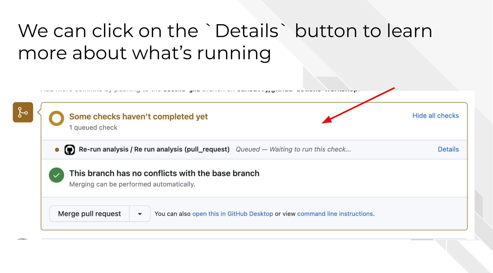

Chapter 5 Automating Re-running Analyses

In the beginning of this course we discussed the benefits of using continuous integration/continuous deployment principles for scientific code including analyses.
In this chapter we will go through example code that shows how this can be set up. We highly encourage you to take this code and adapt it to your own project’s needs.
5.1 Exercise 2 - Re-run analysis example
For this exercise, we are going to continue to use the example repository that we set up in the previous chapter.
- Create a new branch to work from.
As is good practice for adapting a GitHub workflow, we will create a new branch for us to work from. In GitHub Desktop you can click the branch button and follow the same steps we did in the previous exercise.
 From command line:
From command line:
`git checkout -b "more-ghas"`- For this exercise we are going to copy over a second GitHub Action YAML file from the folder. This time, move the
01-re-run-analysis.ymlfile to your.github/workflowsdirectories you made in the previous chapter.
 From command line:
From command line:
mv activity-1-sample-github-actions/01-re-run-analysis.yml .github/workflows/01-re-run-analysis.yml- Now follow the same set of steps we used in the previous chapter to Add, Commit, Push the changes.
 From command line:
From command line:
git add .github/*
git commit -m "adding more ghas"
git push --set-upstream origin more-ghas- Now create a pull request with the changes you just made. (Refer to the previous chapter if you need reminders on how to do this).
After you open your pull request, scroll down to the bottom of the page. If all went as expected, you should see a status message that shows a GitHub Action is running after opening your pull request.

Think about it.
Without looking at the YAML file… What do you suppose the on: value (the when) might be for these actions?

Take a look at the file, .github/workflows/01-re-run-analysis.yml, to see if you are right!
- On your pull request page on GitHub, click on the Details button next to your workflow run.

You can navigate to this same page by going to the Actions tab, then Scrolling down to see the most recent workflow run which should be named Re-run analysis and clicking on that.
5.2 Diving into the details
Let’s break down what is in this GitHub Action YAML file and what this workflow run did.
5.2.1 name and on
- At the top of the file we have:
name: Re-run analysis. This is what our workflow run shows up in theActionstab log as and helps us differentiate it from other GitHub Action Workflows. - Below that, there is the
on:trigger. This workflow of re-running this analysis will only run when a pull request is open or pushed to. And further we’ve specified withbranches:it will only run if the pull request is targeted to branches namedmainorstaging.
# Run this workflow when a pull request is opened or pushed to.
on:
pull_request:
branches: [ main, staging ]5.2.2 jobs
In our jobs: we’ve named this job R run analysis.
Additionally we are running this on a ubuntu-latest operating system, but as opposed to our first GitHub Action workflow from the previous chapter, where we didn’t need any additional packages or software to run our job, this job, the analysis script we are running, requires things like R, python, and some specific packages.
We could, attempt to write a script that installs everything we need. However, that would likely be a lot of work, may not work reliably, and would be hard to track changes. Instead, we are using a custom made docker image that has R, python, and other packages we need already installed.
This custom made docker image is pulled from Dockerhub and it exists here. If you wish to make a custom Docker image to use in your analysis, easiest way to do this is to make a Dockerfile, build a Docker image from this file and then push it to Dockerhub. We have some Dockerfiles for this image and others managed and version controlled here on this GitHub repository. You may note we use GitHub Actions on this repository to help us manage these Docker images.
jobs:
re-run:
name: Re run analysis
runs-on: ubuntu-latest
# This image has python, R and other things we need to run our mock analysis
container:
image: jhudsl/ottr_python:main5.2.2.1 actions/checkout
One of the most frequently use GitHub Actions from the GitHub Action Marketplace is actions/checkout. This action will grab all the files from a GitHub repository so you can do things with those files in your workflow. (Recall that when you spin up a GitHub Action Environment it is a blank slate, so we have to put our files there too if we want to use them).
steps:
# Need to get the files specific to our branch from our pull request
- name: Checkout files
uses: actions/checkout@v3
with:
fetch-depth: 0By default, it will checkout the files from the repository where this action is being run, but we could specify other repository and other branches.
fetch-depth: 0 means we will grab all the file.
5.2.2.2 sh run_analysis.sh
Now the main objective we were building to. We are going to run a script that re-runs our entire analysis. We’ve named this file run_analysis.sh to be clear about what it does. We’re giving this step an id of running (this will become clear in the next paragraph).
Additionally the | tells run: to expect multiple lines of a command. We didn’t need this to be a multiple line command, but we thought it would be good to show you this.
# We can call our main script then to re-run it to make sure it works
- name: Run it
id: running
run: |
sh run_analysis.shWe have three steps in this fake analysis and the files are numbered in which order they are run. If you open up the run_analysis.sh file, you will see its basically simple workflow step calling file.
It looks like this:
# This is a mock script that shows how you could have your whole analysis ran by one script call.
## Usage: To re-run this whole analysis, go to bash and
# These specs will make sure that if one script fails this will fail the script
set -e
## Run the first step
python3 "01-python_test.py"
## Run the second step
Rscript "02-r_test.R"
## Run a third step
Rscript -e "rmarkdown::render('03-make-a-plot.Rmd')"The set -e is actually critical here. We need to make sure that this script will stop if it encounters an error. That is the main point of our GitHub Action here, is we want to know if something failed. (We also want to know if the results remained the same, but that will require a bit more engineering than we are showing in this simple example).
A very tricky thing about GitHub Actions (and languages called by them) is that GitHub workflows do not always stop when there are errors as we would define them. When designing a new action, we need to carefully evaluate the steps of the job in the logs to make sure what we think happened and completed actually did complete successfully.
Returning to our GitHub Action YAML file, we can see that the last step of this job has an if statement. What we are doing here is asking GitHub to evaluate whether the step running (remember the id we set?) had success as its outcome.
# We can have this double check that the last step was successfully run
- name: Check on re-run outcome
if: steps.running.outcome != 'success'
run: |
echo Re-running status ${{steps.running.outcome}}
exit 1This steps.running.outcome is representative of a whole new world of GitHub Actions Environmental variables that we have not discussed yet but we will now!
5.2.3 Summary